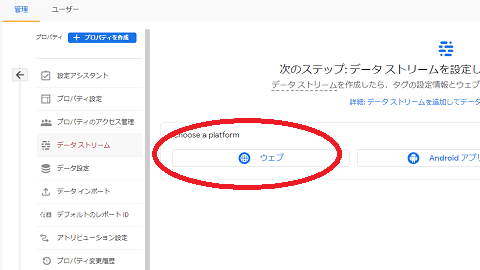

Googleアナリティクスの設定方法
Googleアナリティクスは無料で利用できるアクセス解析です。Googleアカウントを持っていれば、すぐに利用し始めることができます。
最新版の「Googleアナリティクス４プロパティ（GA4）」と従来版の「ユニバーサル アナリティクス プロバティ（UA）」の２種類がありますが、新規で設定する場合はデフォルトでは最新版のGA4で作成することになります。
- 最新版 → GA4 → ウェブサイト、アプリ、またはその両方に対応
- 従来版 → UA → ウェブサイトのみ
従来のUA版（ユニバーサルアナリティクス）はウェブサイトにしか対応していませんが、最新のGA4版の方はウェブサイト、アプリ、またはその両方に対応している違いがあります。
■GA4（最新版）
GA4の管理画面はおしゃれでスタイリッシュですが、これから新規で利用し始める場合、デフォルトではこちらのGA4バージョンでの作成になります。
GA4ではアプリにも対応していますが、アプリにはページビューの概念がないため、「イベント」として計測されます。そのため、従来のセッションやページビューなどを基本にしたアクセス解析とは使うため、慣れるまでに時間がかかるかもしれません。
■UA（従来版）
こちらは従来のユニバーサル アナリティクス（UA）版の画面ですが、「UA-」からはじまるトラッキングコードになります。
もし、何らかの理由でUA版も必要な場合、GA4版と併用するのもよいかもしれません。
新規でGoogleアナリティクスを設定する方法
新規でアナリティクスを設定する場合、まずはGoogleアカウントを取得しておきます。既にGmailなどを使用していれば、そちらのアカウントを使用するとよいでしょう。
手順としては、「Googleアカウント」 → 「アナリティクスのアカウント」 → 「プロパティ」 → サイトに「計測タグの貼り付け」の順で設定していくことになります。
■アナリティクスのアカウントの設定
Googleアカウントで上記のGoogleアナリティクスにアクセスしたのち、次にアナリティクスの「アカウント名」を作成します。このアカウント名は任意ですが、会社名やユーザー名など任意の名前を付けておくことをおすすめします。
当サイト運営者の場合、この「アカウント名」はニックネームにしており、そのアカウントの下に複数のサイトを「プロパティ」で管理しています。
プライベート用とチーム用のアカウントでひとつづつなど、アカウント自体もいくつか取得できますが、複数のサイトを運営している場合はプロパティの方で管理することをおすすめします。
ヘルプページには以下の記載がありますが、最大100個のプロパティを設定できるため、100サイト分もあれば十分かと思います。
「各アカウントではそれぞれ最大 100 個のプロパティを設定でき、プロパティごとに最大 25 個のビューを設定できます。」
■プロパティの設定
アカウントの次は「プロパティ」の設定をしますが、サイト名などを入力したのち、日本時間や日本円などを選択します。
デフォルトの状態では最新版のGA4を使用することになりますが、通常は特にこのままで問題ありません。
もし、従来のユニバーサルアナリティクスも使用したい場合、下部の「詳細オプションを表示」の箇所から右側のスイッチをオンにしたのち、URLなどを入力するとUA版も設定することができます。
最新版のGA4のみ、あるいは従来版のUAのみ、もしくはその両方など、いずれかを選択して設定されるとよいでしょう。
ビジネスの概要などは当てはまる箇所を選択し、規約についても「日本」を選択して同意します。
■計測タグの貼り付け
次に、データストリームの箇所から「ウェブ」を選択します。

次に、サイトのURLやストリーム名などを入力します。
あとはサイトの<head>タグ内にタグを貼り付けて完了です。
最後に、実際に自分がサイトにアクセスしたのち、レポートの「リアルタイム」の箇所にデータが反映されているかを確認します。
リアルタイムのため、数秒程度ですぐに反映されるはずですが、ゼロのままの場合は計測用のタグがきちんと貼り付けられていない可能性があります。レンタルサーバーによっては、サーバーにキャッシュが残っていて更新が反映されていないこともあるため、時間をおいて確認してみるとよいでしょう。
既存のアナリティクス（UA）とGA4を併用する方法
既に従来の「ユニバーサル アナリティクス」を使用している状態でGA4も併用する場合、「管理」 → 「プロパティ」 → 「GA4設定アシスタント」の箇所から導入することをおすすめします。
ウィザードの「既存のタグを使用してデータ収集を有効にします。」の箇所にチェックを入れれば、既存のタグのままで簡単に設定することができるはずです。
完了しましたら、「UA」と「GA4」の二つのプロパティが作成されているはずですので、こちらから両方を併用することができます。
■ウィザードでチェックできない場合
当サイト運営者の場合、タグマネージャーを使用しているためか、この箇所のチェックができませんでした。
そのため、そのままGA4のプロパティを作成しましたが、GA4側の「データストリーム」の箇所を確認しても「過去 48 時間に受信したデータはありません。」の状態のままでした。
そこで、こちらの詳細を確認すると「既存のページ上のタグを使用する」の箇所があったため、こちらに表示されている手順どおり、UAプロパティ側にて、測定IDを記入して接続すればデータを受信できるようになりました。
この場合もサイトに貼り付けている既存のコードを変更する必要なく、そのままGA4を併用することができるはずです。
使用している環境にもよるかと思いますが、当サイト運営者は上記の方法で対応できたため、ご参考にして頂けると幸いです。